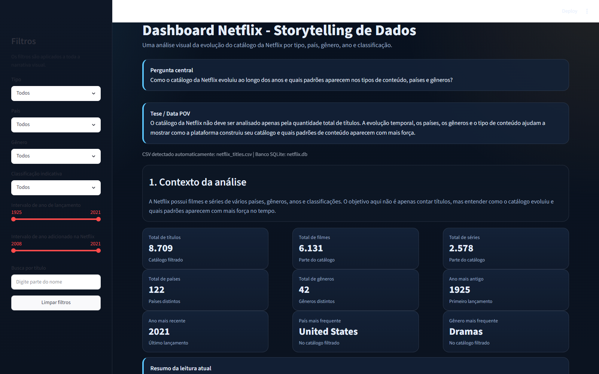
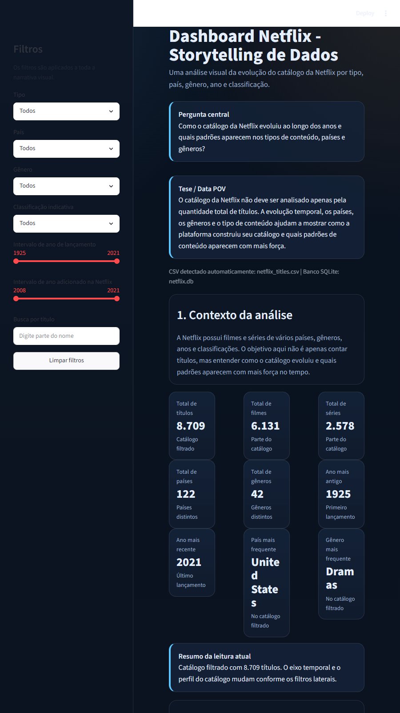

Base limpa e estruturada a partir do dataset original.
Como o catálogo da Netflix evoluiu ao longo dos anos?
Uma vitrine estática do projeto de análise de dados com linha temporal, filtros, indicadores, rankings e uma conclusão orientada por narrativa. O foco é entender quais tipos de conteúdo dominam a plataforma, como os países aparecem no catálogo e em quais períodos houve maior expansão.
Pergunta central
Como o catálogo da Netflix evoluiu ao longo dos anos e quais tipos de conteúdo dominam a plataforma?
Segmento dominante no catálogo analisado.
Distribuição temporal diferente da de filmes.
Diversidade geográfica e temática do acervo.
Linha narrativa da análise
- Tipo de conteúdo: filmes superam séries em volume total.
- Origem geográfica: os Estados Unidos aparecem como principal país.
- Gêneros: dramas lideram a frequência dentro do catálogo.
- Tempo: a década de 2010 concentra a maior parte dos títulos.
- Adições na Netflix: 2019 foi o ano com mais entradas no acervo.
A análise mostra que o catálogo não cresce apenas em quantidade, mas em diversidade e concentração temática. A década de 2010 marca o maior salto do acervo, enquanto a presença de filmes, dramas e títulos dos Estados Unidos ajuda a definir a identidade predominante da plataforma.
Capturas do dashboard
As imagens abaixo foram exportadas da versão local do dashboard para servir como vitrine visual no deploy da Vercel.


Justificativa dos gráficos
- Linha temporal: mostra como o catálogo cresceu ao longo do tempo.
- Filmes x séries: permite comparar a composição do acervo.
- Top países e gêneros: evidenciam padrões de origem e tema.
- Classificação indicativa: indica o perfil etário predominante.
- Duração: revela distribuição de filmes e temporadas.
- Dispersão: ajuda a perceber relações entre ano e duração.
Conclusão esperada
O catálogo da Netflix é fortemente apoiado em filmes, com maior concentração de títulos na década de 2010, presença dominante dos Estados Unidos e forte recorrência de dramas. A vitrine completa em Streamlit aprofunda essa leitura com filtros, tabela interativa e uma conclusão automática baseada nos dados filtrados.